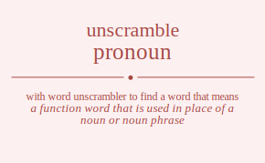

The word found after unscrambling pronoun means that a function word that is used in place of a noun or noun phrase, .

The word found after unscrambling pronoun means that a function word that is used in place of a noun or noun phrase, .
You can also find solutions for different combinations of letters in pronoun like pronoun prononu pronuon pronuno pronnou pronnuo proonun proonnu proounn proounn proonnu proonun prounon prounno prouonn prouonn prounno prounon pronnou pronnuo prononu pronoun pronuno pronuon prnooun prnoonu prnouon prnouno prnonou prnonuo prnooun prnoonu prnouon prnouno prnonou prnonuo prnuoon prnuono prnuoon prnuono prnunoo prnunoo prnnoou prnnouo prnnoou prnnouo prnnuoo prnnuoo proonun proonnu proounn proounn proonnu proonun pronoun prononu pronuon pronuno pronnou pronnuo prouonn prouonn prounon prounno prounon prounno prononu pronoun pronnou pronnuo pronuon pronuno pruonon pruonno pruoonn pruoonn pruonno pruonon prunoon prunono prunoon prunono prunnoo prunnoo pruoonn pruoonn pruonon pruonno pruonon pruonno prunono prunoon prunnoo prunnoo prunoon prunono prnonou prnonuo prnoonu prnooun prnouno prnouon prnnoou prnnouo prnnoou prnnouo prnnuoo prnnuoo prnoonu prnooun prnonou prnonuo prnouon prnouno prnuono prnuoon prnunoo prnunoo prnuoon prnuono pornoun pornonu pornuon pornuno pornnou pornnuo poronun poronnu porounn porounn poronnu poronun porunon porunno poruonn poruonn porunno porunon pornnou pornnuo pornonu pornoun pornuno pornuon ponroun ponronu ponruon ponruno ponrnou ponrnuo ponorun ponornu ponourn ponounr pononru pononur ponuron ponurno ponuorn ponuonr ponunro ponunor ponnrou ponnruo ponnoru ponnour ponnuro ponnuor poornun poornnu poorunn poorunn poornnu poornun poonrun poonrnu poonurn poonunr poonnru poonnur poournn poournn poounrn poounnr poounrn poounnr poonrnu poonrun poonnru poonnur poonurn poonunr pournon pournno pouronn pouronn pournno pournon pounron pounrno pounorn pounonr pounnro pounnor pouornn pouornn pouonrn pouonnr pouonrn pouonnr pounrno pounron pounnro pounnor pounorn pounonr ponrnou ponrnuo ponronu ponroun ponruno ponruon ponnrou ponnruo ponnoru ponnour ponnuro ponnuor ponornu ponorun pononru pononur ponourn ponounr ponurno ponuron ponunro ponunor ponuorn ponuonr pnrooun pnroonu pnrouon pnrouno pnronou pnronuo pnrooun pnroonu pnrouon pnrouno pnronou pnronuo pnruoon pnruono pnruoon pnruono pnrunoo pnrunoo pnrnoou pnrnouo pnrnoou pnrnouo pnrnuoo pnrnuoo pnoroun pnoronu pnoruon pnoruno pnornou pnornuo pnoorun pnoornu pnoourn pnoounr pnoonru pnoonur pnouron pnourno pnouorn pnouonr pnounro pnounor pnonrou pnonruo pnonoru pnonour pnonuro pnonuor pnoroun pnoronu pnoruon pnoruno pnornou pnornuo pnoorun pnoornu pnoourn pnoounr pnoonru pnoonur pnouron pnourno pnouorn pnouonr pnounro pnounor pnonrou pnonruo pnonoru pnonour pnonuro pnonuor pnuroon pnurono pnuroon pnurono pnurnoo pnurnoo pnuoron pnuorno pnuoorn pnuoonr pnuonro pnuonor pnuoron pnuorno pnuoorn pnuoonr pnuonro pnuonor pnunroo pnunroo pnunoro pnunoor pnunoro pnunoor pnnroou pnnrouo pnnroou pnnrouo pnnruoo pnnruoo pnnorou pnnoruo pnnooru pnnoour pnnouro pnnouor pnnorou pnnoruo pnnooru pnnoour pnnouro pnnouor pnnuroo pnnuroo pnnuoro pnnuoor pnnuoro pnnuoor poronun poronnu porounn porounn poronnu poronun pornoun pornonu pornuon pornuno pornnou pornnuo poruonn poruonn porunon porunno porunon porunno pornonu pornoun pornnou pornnuo pornuon pornuno poornun poornnu poorunn poorunn poornnu poornun poonrun poonrnu poonurn poonunr poonnru poonnur poournn poournn poounrn poounnr poounrn poounnr poonrnu poonrun poonnru poonnur poonurn poonunr ponroun ponronu ponruon ponruno ponrnou ponrnuo ponorun ponornu ponourn ponounr pononru pononur ponuron ponurno ponuorn ponuonr ponunro ponunor ponnrou ponnruo ponnoru ponnour ponnuro ponnuor pouronn pouronn pournon pournno pournon pournno pouornn pouornn pouonrn pouonnr pouonrn pouonnr pounron pounrno pounorn pounonr pounnro pounnor pounron pounrno pounorn pounonr pounnro pounnor ponronu ponroun ponrnou ponrnuo ponruon ponruno ponornu ponorun pononru pononur ponourn ponounr ponnrou ponnruo ponnoru ponnour ponnuro ponnuor ponuron ponurno ponuorn ponuonr ponunro ponunor puronon puronno puroonn puroonn puronno puronon purnoon purnono purnoon purnono purnnoo purnnoo puroonn puroonn puronon puronno puronon puronno purnono purnoon purnnoo purnnoo purnoon purnono puornon puornno puoronn puoronn puornno puornon puonron puonrno puonorn puononr puonnro puonnor puoornn puoornn puoonrn puoonnr puoonrn puoonnr puonrno puonron puonnro puonnor puonorn puononr punroon punrono punroon punrono punrnoo punrnoo punoron punorno punoorn punoonr punonro punonor punoron punorno punoorn punoonr punonro punonor punnroo punnroo punnoro punnoor punnoro punnoor puoronn puoronn puornon puornno puornon puornno puoornn puoornn puoonrn puoonnr puoonrn puoonnr puonron puonrno puonorn puononr puonnro puonnor puonron puonrno puonorn puononr puonnro puonnor punrono punroon punrnoo punrnoo punroon punrono punorno punoron punonro punonor punoorn punoonr punnroo punnroo punnoro punnoor punnoro punnoor punoron punorno punoorn punoonr punonro punonor pnronou pnronuo pnroonu pnrooun pnrouno pnrouon pnrnoou pnrnouo pnrnoou pnrnouo pnrnuoo pnrnuoo pnroonu pnrooun pnronou pnronuo pnrouon pnrouno pnruono pnruoon pnrunoo pnrunoo pnruoon pnruono pnornou pnornuo pnoronu pnoroun pnoruno pnoruon pnonrou pnonruo pnonoru pnonour pnonuro pnonuor pnoornu pnoorun pnoonru pnoonur pnoourn pnoounr pnourno pnouron pnounro pnounor pnouorn pnouonr pnnroou pnnrouo pnnroou pnnrouo pnnruoo pnnruoo pnnorou pnnoruo pnnooru pnnoour pnnouro pnnouor pnnorou pnnoruo pnnooru pnnoour pnnouro pnnouor pnnuroo pnnuroo pnnuoro pnnuoor pnnuoro pnnuoor pnoronu pnoroun pnornou pnornuo pnoruon pnoruno pnoornu pnoorun pnoonru pnoonur pnoourn pnoounr pnonrou pnonruo pnonoru pnonour pnonuro pnonuor pnouron pnourno pnouorn pnouonr pnounro pnounor pnurono pnuroon pnurnoo pnurnoo pnuroon pnurono pnuorno pnuoron pnuonro pnuonor pnuoorn pnuoonr pnunroo pnunroo pnunoro pnunoor pnunoro pnunoor pnuoron pnuorno pnuoorn pnuoonr pnuonro pnuonor rponoun rpononu rponuon rponuno rponnou rponnuo rpoonun rpoonnu rpoounn rpoounn rpoonnu rpoonun rpounon rpounno rpouonn rpouonn rpounno rpounon rponnou rponnuo rpononu rponoun rponuno rponuon rpnooun rpnoonu rpnouon rpnouno rpnonou rpnonuo rpnooun rpnoonu rpnouon rpnouno rpnonou rpnonuo rpnuoon rpnuono rpnuoon rpnuono rpnunoo rpnunoo rpnnoou rpnnouo rpnnoou rpnnouo rpnnuoo rpnnuoo rpoonun rpoonnu rpoounn rpoounn rpoonnu rpoonun rponoun rpononu rponuon rponuno rponnou rponnuo rpouonn rpouonn rpounon rpounno rpounon rpounno rpononu rponoun rponnou rponnuo rponuon rponuno rpuonon rpuonno rpuoonn rpuoonn rpuonno rpuonon rpunoon rpunono rpunoon rpunono rpunnoo rpunnoo rpuoonn rpuoonn rpuonon rpuonno rpuonon rpuonno rpunono rpunoon rpunnoo rpunnoo rpunoon rpunono rpnonou rpnonuo rpnoonu rpnooun rpnouno rpnouon rpnnoou rpnnouo rpnnoou rpnnouo rpnnuoo rpnnuoo rpnoonu rpnooun rpnonou rpnonuo rpnouon rpnouno rpnuono rpnuoon rpnunoo rpnunoo rpnuoon rpnuono ropnoun ropnonu ropnuon ropnuno ropnnou ropnnuo roponun roponnu ropounn ropounn roponnu roponun ropunon ropunno ropuonn ropuonn ropunno ropunon ropnnou ropnnuo ropnonu ropnoun ropnuno ropnuon ronpoun ronponu ronpuon ronpuno ronpnou ronpnuo ronopun ronopnu ronoupn ronounp rononpu rononup ronupon ronupno ronuopn ronuonp ronunpo ronunop ronnpou ronnpuo ronnopu ronnoup ronnupo ronnuop roopnun roopnnu roopunn roopunn roopnnu roopnun roonpun roonpnu roonupn roonunp roonnpu roonnup rooupnn rooupnn roounpn roounnp roounpn roounnp roonpnu roonpun roonnpu roonnup roonupn roonunp roupnon roupnno rouponn rouponn roupnno roupnon rounpon rounpno rounopn rounonp rounnpo rounnop rouopnn rouopnn rouonpn rouonnp rouonpn rouonnp rounpno rounpon rounnpo rounnop rounopn rounonp ronpnou ronpnuo ronponu ronpoun ronpuno ronpuon ronnpou ronnpuo ronnopu ronnoup ronnupo ronnuop ronopnu ronopun rononpu rononup ronoupn ronounp ronupno ronupon ronunpo ronunop ronuopn ronuonp rnpooun rnpoonu rnpouon rnpouno rnponou rnponuo rnpooun rnpoonu rnpouon rnpouno rnponou rnponuo rnpuoon rnpuono rnpuoon rnpuono rnpunoo rnpunoo rnpnoou rnpnouo rnpnoou rnpnouo rnpnuoo rnpnuoo rnopoun rnoponu rnopuon rnopuno rnopnou rnopnuo rnoopun rnoopnu rnooupn rnoounp rnoonpu rnoonup rnoupon rnoupno rnouopn rnouonp rnounpo rnounop rnonpou rnonpuo rnonopu rnonoup rnonupo rnonuop rnopoun rnoponu rnopuon rnopuno rnopnou rnopnuo rnoopun rnoopnu rnooupn rnoounp rnoonpu rnoonup rnoupon rnoupno rnouopn rnouonp rnounpo rnounop rnonpou rnonpuo rnonopu rnonoup rnonupo rnonuop rnupoon rnupono rnupoon rnupono rnupnoo rnupnoo rnuopon rnuopno rnuoopn rnuoonp rnuonpo rnuonop rnuopon rnuopno rnuoopn rnuoonp rnuonpo rnuonop rnunpoo rnunpoo rnunopo rnunoop rnunopo rnunoop rnnpoou rnnpouo rnnpoou rnnpouo rnnpuoo rnnpuoo rnnopou rnnopuo rnnoopu rnnooup rnnoupo rnnouop rnnopou rnnopuo rnnoopu rnnooup rnnoupo rnnouop rnnupoo rnnupoo rnnuopo rnnuoop rnnuopo rnnuoop roponun roponnu ropounn ropounn roponnu roponun ropnoun ropnonu ropnuon ropnuno ropnnou ropnnuo ropuonn ropuonn ropunon ropunno ropunon ropunno ropnonu ropnoun ropnnou ropnnuo ropnuon ropnuno roopnun roopnnu roopunn roopunn roopnnu roopnun roonpun roonpnu roonupn roonunp roonnpu roonnup rooupnn rooupnn roounpn roounnp roounpn roounnp roonpnu roonpun roonnpu roonnup roonupn roonunp ronpoun ronponu ronpuon ronpuno ronpnou ronpnuo ronopun ronopnu ronoupn ronounp rononpu rononup ronupon ronupno ronuopn ronuonp ronunpo ronunop ronnpou ronnpuo ronnopu ronnoup ronnupo ronnuop rouponn rouponn roupnon roupnno roupnon roupnno rouopnn rouopnn rouonpn rouonnp rouonpn rouonnp rounpon rounpno rounopn rounonp rounnpo rounnop rounpon rounpno rounopn rounonp rounnpo rounnop ronponu ronpoun ronpnou ronpnuo ronpuon ronpuno ronopnu ronopun rononpu rononup ronoupn ronounp ronnpou ronnpuo ronnopu ronnoup ronnupo ronnuop ronupon ronupno ronuopn ronuonp ronunpo ronunop ruponon ruponno rupoonn rupoonn ruponno ruponon rupnoon rupnono rupnoon rupnono rupnnoo rupnnoo rupoonn rupoonn ruponon ruponno ruponon ruponno rupnono rupnoon rupnnoo rupnnoo rupnoon rupnono ruopnon ruopnno ruoponn ruoponn ruopnno ruopnon ruonpon ruonpno ruonopn ruononp ruonnpo ruonnop ruoopnn ruoopnn ruoonpn ruoonnp ruoonpn ruoonnp ruonpno ruonpon ruonnpo ruonnop ruonopn ruononp runpoon runpono runpoon runpono runpnoo runpnoo runopon runopno runoopn runoonp runonpo runonop runopon runopno runoopn runoonp runonpo runonop runnpoo runnpoo runnopo runnoop runnopo runnoop ruoponn ruoponn ruopnon ruopnno ruopnon ruopnno ruoopnn ruoopnn ruoonpn ruoonnp ruoonpn ruoonnp ruonpon ruonpno ruonopn ruononp ruonnpo ruonnop ruonpon ruonpno ruonopn ruononp ruonnpo ruonnop runpono runpoon runpnoo runpnoo runpoon runpono runopno runopon runonpo runonop runoopn runoonp runnpoo runnpoo runnopo runnoop runnopo runnoop runopon runopno runoopn runoonp runonpo runonop rnponou rnponuo rnpoonu rnpooun rnpouno rnpouon rnpnoou rnpnouo rnpnoou rnpnouo rnpnuoo rnpnuoo rnpoonu rnpooun rnponou rnponuo rnpouon rnpouno rnpuono rnpuoon rnpunoo rnpunoo rnpuoon rnpuono rnopnou rnopnuo rnoponu rnopoun rnopuno rnopuon rnonpou rnonpuo rnonopu rnonoup rnonupo rnonuop rnoopnu rnoopun rnoonpu rnoonup rnooupn rnoounp rnoupno rnoupon rnounpo rnounop rnouopn rnouonp rnnpoou rnnpouo rnnpoou rnnpouo rnnpuoo rnnpuoo rnnopou rnnopuo rnnoopu rnnooup rnnoupo rnnouop rnnopou rnnopuo rnnoopu rnnooup rnnoupo rnnouop rnnupoo rnnupoo rnnuopo rnnuoop rnnuopo rnnuoop rnoponu rnopoun rnopnou rnopnuo rnopuon rnopuno rnoopnu rnoopun rnoonpu rnoonup rnooupn rnoounp rnonpou rnonpuo rnonopu rnonoup rnonupo rnonuop rnoupon rnoupno rnouopn rnouonp rnounpo rnounop rnupono rnupoon rnupnoo rnupnoo rnupoon rnupono rnuopno rnuopon rnuonpo rnuonop rnuoopn rnuoonp rnunpoo rnunpoo rnunopo rnunoop rnunopo rnunoop rnuopon rnuopno rnuoopn rnuoonp rnuonpo rnuonop oprnoun oprnonu oprnuon oprnuno oprnnou oprnnuo opronun opronnu oprounn oprounn opronnu opronun oprunon oprunno opruonn opruonn oprunno oprunon oprnnou oprnnuo oprnonu oprnoun oprnuno oprnuon opnroun opnronu opnruon opnruno opnrnou opnrnuo opnorun opnornu opnourn opnounr opnonru opnonur opnuron opnurno opnuorn opnuonr opnunro opnunor opnnrou opnnruo opnnoru opnnour opnnuro opnnuor opornun opornnu oporunn oporunn opornnu opornun oponrun oponrnu oponurn oponunr oponnru oponnur opournn opournn opounrn opounnr opounrn opounnr oponrnu oponrun oponnru oponnur oponurn oponunr opurnon opurnno opuronn opuronn opurnno opurnon opunron opunrno opunorn opunonr opunnro opunnor opuornn opuornn opuonrn opuonnr opuonrn opuonnr opunrno opunron opunnro opunnor opunorn opunonr opnrnou opnrnuo opnronu opnroun opnruno opnruon opnnrou opnnruo opnnoru opnnour opnnuro opnnuor opnornu opnorun opnonru opnonur opnourn opnounr opnurno opnuron opnunro opnunor opnuorn opnuonr orpnoun orpnonu orpnuon orpnuno orpnnou orpnnuo orponun orponnu orpounn orpounn orponnu orponun orpunon orpunno orpuonn orpuonn orpunno orpunon orpnnou orpnnuo orpnonu orpnoun orpnuno orpnuon ornpoun ornponu ornpuon ornpuno ornpnou ornpnuo ornopun ornopnu ornoupn ornounp ornonpu ornonup ornupon ornupno ornuopn ornuonp ornunpo ornunop ornnpou ornnpuo ornnopu ornnoup ornnupo ornnuop oropnun oropnnu oropunn oropunn oropnnu oropnun oronpun oronpnu oronupn oronunp oronnpu oronnup oroupnn oroupnn orounpn orounnp orounpn orounnp oronpnu oronpun oronnpu oronnup oronupn oronunp orupnon orupnno oruponn oruponn orupnno orupnon orunpon orunpno orunopn orunonp orunnpo orunnop oruopnn oruopnn oruonpn oruonnp oruonpn oruonnp orunpno orunpon orunnpo orunnop orunopn orunonp ornpnou ornpnuo ornponu ornpoun ornpuno ornpuon ornnpou ornnpuo ornnopu ornnoup ornnupo ornnuop ornopnu ornopun ornonpu ornonup ornoupn ornounp ornupno ornupon ornunpo ornunop ornuopn ornuonp onproun onpronu onpruon onpruno onprnou onprnuo onporun onpornu onpourn onpounr onponru onponur onpuron onpurno onpuorn onpuonr onpunro onpunor onpnrou onpnruo onpnoru onpnour onpnuro onpnuor onrpoun onrponu onrpuon onrpuno onrpnou onrpnuo onropun onropnu onroupn onrounp onronpu onronup onrupon onrupno onruopn onruonp onrunpo onrunop onrnpou onrnpuo onrnopu onrnoup onrnupo onrnuop onoprun onoprnu onopurn onopunr onopnru onopnur onorpun onorpnu onorupn onorunp onornpu onornup onouprn onoupnr onourpn onournp onounpr onounrp ononpru ononpur ononrpu ononrup ononupr ononurp onupron onuprno onuporn onuponr onupnro onupnor onurpon onurpno onuropn onuronp onurnpo onurnop onuoprn onuopnr onuorpn onuornp onuonpr onuonrp onunpro onunpor onunrpo onunrop onunopr onunorp onnprou onnpruo onnporu onnpour onnpuro onnpuor onnrpou onnrpuo onnropu onnroup onnrupo onnruop onnopru onnopur onnorpu onnorup onnoupr onnourp onnupro onnupor onnurpo onnurop onnuopr onnuorp ooprnun ooprnnu ooprunn ooprunn ooprnnu ooprnun oopnrun oopnrnu oopnurn oopnunr oopnnru oopnnur oopurnn oopurnn oopunrn oopunnr oopunrn oopunnr oopnrnu oopnrun oopnnru oopnnur oopnurn oopnunr oorpnun oorpnnu oorpunn oorpunn oorpnnu oorpnun oornpun oornpnu oornupn oornunp oornnpu oornnup oorupnn oorupnn oorunpn oorunnp oorunpn oorunnp oornpnu oornpun oornnpu oornnup oornupn oornunp oonprun oonprnu oonpurn oonpunr oonpnru oonpnur oonrpun oonrpnu oonrupn oonrunp oonrnpu oonrnup oonuprn oonupnr oonurpn oonurnp oonunpr oonunrp oonnpru oonnpur oonnrpu oonnrup oonnupr oonnurp oouprnn oouprnn ooupnrn ooupnnr ooupnrn ooupnnr oourpnn oourpnn oournpn oournnp oournpn oournnp oounprn oounpnr oounrpn oounrnp oounnpr oounnrp oounprn oounpnr oounrpn oounrnp oounnpr oounnrp oonprnu oonprun oonpnru oonpnur oonpurn oonpunr oonrpnu oonrpun oonrnpu oonrnup oonrupn oonrunp oonnpru oonnpur oonnrpu oonnrup oonnupr oonnurp oonuprn oonupnr oonurpn oonurnp oonunpr oonunrp ouprnon ouprnno oupronn oupronn ouprnno ouprnon oupnron oupnrno oupnorn oupnonr oupnnro oupnnor oupornn oupornn ouponrn ouponnr ouponrn ouponnr oupnrno oupnron oupnnro oupnnor oupnorn oupnonr ourpnon ourpnno ourponn ourponn ourpnno ourpnon ournpon ournpno ournopn ournonp ournnpo ournnop ouropnn ouropnn ouronpn ouronnp ouronpn ouronnp ournpno ournpon ournnpo ournnop ournopn ournonp ounpron ounprno ounporn ounponr ounpnro ounpnor ounrpon ounrpno ounropn ounronp ounrnpo ounrnop ounoprn ounopnr ounorpn ounornp ounonpr ounonrp ounnpro ounnpor ounnrpo ounnrop ounnopr ounnorp ouoprnn ouoprnn ouopnrn ouopnnr ouopnrn ouopnnr ouorpnn ouorpnn ouornpn ouornnp ouornpn ouornnp ouonprn ouonpnr ouonrpn ouonrnp ouonnpr ouonnrp ouonprn ouonpnr ouonrpn ouonrnp ouonnpr ouonnrp ounprno ounpron ounpnro ounpnor ounporn ounponr ounrpno ounrpon ounrnpo ounrnop ounropn ounronp ounnpro ounnpor ounnrpo ounnrop ounnopr ounnorp ounoprn ounopnr ounorpn ounornp ounonpr ounonrp onprnou onprnuo onpronu onproun onpruno onpruon onpnrou onpnruo onpnoru onpnour onpnuro onpnuor onpornu onporun onponru onponur onpourn onpounr onpurno onpuron onpunro onpunor onpuorn onpuonr onrpnou onrpnuo onrponu onrpoun onrpuno onrpuon onrnpou onrnpuo onrnopu onrnoup onrnupo onrnuop onropnu onropun onronpu onronup onroupn onrounp onrupno onrupon onrunpo onrunop onruopn onruonp onnprou onnpruo onnporu onnpour onnpuro onnpuor onnrpou onnrpuo onnropu onnroup onnrupo onnruop onnopru onnopur onnorpu onnorup onnoupr onnourp onnupro onnupor onnurpo onnurop onnuopr onnuorp onoprnu onoprun onopnru onopnur onopurn onopunr onorpnu onorpun onornpu onornup onorupn onorunp ononpru ononpur ononrpu ononrup ononupr ononurp onouprn onoupnr onourpn onournp onounpr onounrp onuprno onupron onupnro onupnor onuporn onuponr onurpno onurpon onurnpo onurnop onuropn onuronp onunpro onunpor onunrpo onunrop onunopr onunorp onuoprn onuopnr onuorpn onuornp onuonpr onuonrp nprooun nproonu nprouon nprouno npronou npronuo nprooun nproonu nprouon nprouno npronou npronuo npruoon npruono npruoon npruono nprunoo nprunoo nprnoou nprnouo nprnoou nprnouo nprnuoo nprnuoo nporoun nporonu nporuon nporuno npornou npornuo npoorun npoornu npoourn npoounr npoonru npoonur npouron npourno npouorn npouonr npounro npounor nponrou nponruo nponoru nponour nponuro nponuor nporoun nporonu nporuon nporuno npornou npornuo npoorun npoornu npoourn npoounr npoonru npoonur npouron npourno npouorn npouonr npounro npounor nponrou nponruo nponoru nponour nponuro nponuor npuroon npurono npuroon npurono npurnoo npurnoo npuoron npuorno npuoorn npuoonr npuonro npuonor npuoron npuorno npuoorn npuoonr npuonro npuonor npunroo npunroo npunoro npunoor npunoro npunoor npnroou npnrouo npnroou npnrouo npnruoo npnruoo npnorou npnoruo npnooru npnoour npnouro npnouor npnorou npnoruo npnooru npnoour npnouro npnouor npnuroo npnuroo npnuoro npnuoor npnuoro npnuoor nrpooun nrpoonu nrpouon nrpouno nrponou nrponuo nrpooun nrpoonu nrpouon nrpouno nrponou nrponuo nrpuoon nrpuono nrpuoon nrpuono nrpunoo nrpunoo nrpnoou nrpnouo nrpnoou nrpnouo nrpnuoo nrpnuoo nropoun nroponu nropuon nropuno nropnou nropnuo nroopun nroopnu nrooupn nroounp nroonpu nroonup nroupon nroupno nrouopn nrouonp nrounpo nrounop nronpou nronpuo nronopu nronoup nronupo nronuop nropoun nroponu nropuon nropuno nropnou nropnuo nroopun nroopnu nrooupn nroounp nroonpu nroonup nroupon nroupno nrouopn nrouonp nrounpo nrounop nronpou nronpuo nronopu nronoup nronupo nronuop nrupoon nrupono nrupoon nrupono nrupnoo nrupnoo nruopon nruopno nruoopn nruoonp nruonpo nruonop nruopon nruopno nruoopn nruoonp nruonpo nruonop nrunpoo nrunpoo nrunopo nrunoop nrunopo nrunoop nrnpoou nrnpouo nrnpoou nrnpouo nrnpuoo nrnpuoo nrnopou nrnopuo nrnoopu nrnooup nrnoupo nrnouop nrnopou nrnopuo nrnoopu nrnooup nrnoupo nrnouop nrnupoo nrnupoo nrnuopo nrnuoop nrnuopo nrnuoop noproun nopronu nopruon nopruno noprnou noprnuo noporun nopornu nopourn nopounr noponru noponur nopuron nopurno nopuorn nopuonr nopunro nopunor nopnrou nopnruo nopnoru nopnour nopnuro nopnuor norpoun norponu norpuon norpuno norpnou norpnuo noropun noropnu noroupn norounp noronpu noronup norupon norupno noruopn noruonp norunpo norunop nornpou nornpuo nornopu nornoup nornupo nornuop nooprun nooprnu noopurn noopunr noopnru noopnur noorpun noorpnu noorupn noorunp noornpu noornup noouprn nooupnr noourpn noournp noounpr noounrp noonpru noonpur noonrpu noonrup noonupr noonurp noupron nouprno nouporn nouponr noupnro noupnor nourpon nourpno nouropn nouronp nournpo nournop nouoprn nouopnr nouorpn nouornp nouonpr nouonrp nounpro nounpor nounrpo nounrop nounopr nounorp nonprou nonpruo nonporu nonpour nonpuro nonpuor nonrpou nonrpuo nonropu nonroup nonrupo nonruop nonopru nonopur nonorpu nonorup nonoupr nonourp nonupro nonupor nonurpo nonurop nonuopr nonuorp noproun nopronu nopruon nopruno noprnou noprnuo noporun nopornu nopourn nopounr noponru noponur nopuron nopurno nopuorn nopuonr nopunro nopunor nopnrou nopnruo nopnoru nopnour nopnuro nopnuor norpoun norponu norpuon norpuno norpnou norpnuo noropun noropnu noroupn norounp noronpu noronup norupon norupno noruopn noruonp norunpo norunop nornpou nornpuo nornopu nornoup nornupo nornuop nooprun nooprnu noopurn noopunr noopnru noopnur noorpun noorpnu noorupn noorunp noornpu noornup noouprn nooupnr noourpn noournp noounpr noounrp noonpru noonpur noonrpu noonrup noonupr noonurp noupron nouprno nouporn nouponr noupnro noupnor nourpon nourpno nouropn nouronp nournpo nournop nouoprn nouopnr nouorpn nouornp nouonpr nouonrp nounpro nounpor nounrpo nounrop nounopr nounorp nonprou nonpruo nonporu nonpour nonpuro nonpuor nonrpou nonrpuo nonropu nonroup nonrupo nonruop nonopru nonopur nonorpu nonorup nonoupr nonourp nonupro nonupor nonurpo nonurop nonuopr nonuorp nuproon nuprono nuproon nuprono nuprnoo nuprnoo nuporon nuporno nupoorn nupoonr nuponro nuponor nuporon nuporno nupoorn nupoonr nuponro nuponor nupnroo nupnroo nupnoro nupnoor nupnoro nupnoor nurpoon nurpono nurpoon nurpono nurpnoo nurpnoo nuropon nuropno nuroopn nuroonp nuronpo nuronop nuropon nuropno nuroopn nuroonp nuronpo nuronop nurnpoo nurnpoo nurnopo nurnoop nurnopo nurnoop nuopron nuoprno nuoporn nuoponr nuopnro nuopnor nuorpon nuorpno nuoropn nuoronp nuornpo nuornop nuooprn nuoopnr nuoorpn nuoornp nuoonpr nuoonrp nuonpro nuonpor nuonrpo nuonrop nuonopr nuonorp nuopron nuoprno nuoporn nuoponr nuopnro nuopnor nuorpon nuorpno nuoropn nuoronp nuornpo nuornop nuooprn nuoopnr nuoorpn nuoornp nuoonpr nuoonrp nuonpro nuonpor nuonrpo nuonrop nuonopr nuonorp nunproo nunproo nunporo nunpoor nunporo nunpoor nunrpoo nunrpoo nunropo nunroop nunropo nunroop nunopro nunopor nunorpo nunorop nunoopr nunoorp nunopro nunopor nunorpo nunorop nunoopr nunoorp nnproou nnprouo nnproou nnprouo nnpruoo nnpruoo nnporou nnporuo nnpooru nnpoour nnpouro nnpouor nnporou nnporuo nnpooru nnpoour nnpouro nnpouor nnpuroo nnpuroo nnpuoro nnpuoor nnpuoro nnpuoor nnrpoou nnrpouo nnrpoou nnrpouo nnrpuoo nnrpuoo nnropou nnropuo nnroopu nnrooup nnroupo nnrouop nnropou nnropuo nnroopu nnrooup nnroupo nnrouop nnrupoo nnrupoo nnruopo nnruoop nnruopo nnruoop nnoprou nnopruo nnoporu nnopour nnopuro nnopuor nnorpou nnorpuo nnoropu nnoroup nnorupo nnoruop nnoopru nnoopur nnoorpu nnoorup nnooupr nnoourp nnoupro nnoupor nnourpo nnourop nnouopr nnouorp nnoprou nnopruo nnoporu nnopour nnopuro nnopuor nnorpou nnorpuo nnoropu nnoroup nnorupo nnoruop nnoopru nnoopur nnoorpu nnoorup nnooupr nnoourp nnoupro nnoupor nnourpo nnourop nnouopr nnouorp nnuproo nnuproo nnuporo nnupoor nnuporo nnupoor nnurpoo nnurpoo nnuropo nnuroop nnuropo nnuroop nnuopro nnuopor nnuorpo nnuorop nnuoopr nnuoorp nnuopro nnuopor nnuorpo nnuorop nnuoopr nnuoorp opronun opronnu oprounn oprounn opronnu opronun oprnoun oprnonu oprnuon oprnuno oprnnou oprnnuo opruonn opruonn oprunon oprunno oprunon oprunno oprnonu oprnoun oprnnou oprnnuo oprnuon oprnuno opornun opornnu oporunn oporunn opornnu opornun oponrun oponrnu oponurn oponunr oponnru oponnur opournn opournn opounrn opounnr opounrn opounnr oponrnu oponrun oponnru oponnur oponurn oponunr opnroun opnronu opnruon opnruno opnrnou opnrnuo opnorun opnornu opnourn opnounr opnonru opnonur opnuron opnurno opnuorn opnuonr opnunro opnunor opnnrou opnnruo opnnoru opnnour opnnuro opnnuor opuronn opuronn opurnon opurnno opurnon opurnno opuornn opuornn opuonrn opuonnr opuonrn opuonnr opunron opunrno opunorn opunonr opunnro opunnor opunron opunrno opunorn opunonr opunnro opunnor opnronu opnroun opnrnou opnrnuo opnruon opnruno opnornu opnorun opnonru opnonur opnourn opnounr opnnrou opnnruo opnnoru opnnour opnnuro opnnuor opnuron opnurno opnuorn opnuonr opnunro opnunor orponun orponnu orpounn orpounn orponnu orponun orpnoun orpnonu orpnuon orpnuno orpnnou orpnnuo orpuonn orpuonn orpunon orpunno orpunon orpunno orpnonu orpnoun orpnnou orpnnuo orpnuon orpnuno oropnun oropnnu oropunn oropunn oropnnu oropnun oronpun oronpnu oronupn oronunp oronnpu oronnup oroupnn oroupnn orounpn orounnp orounpn orounnp oronpnu oronpun oronnpu oronnup oronupn oronunp ornpoun ornponu ornpuon ornpuno ornpnou ornpnuo ornopun ornopnu ornoupn ornounp ornonpu ornonup ornupon ornupno ornuopn ornuonp ornunpo ornunop ornnpou ornnpuo ornnopu ornnoup ornnupo ornnuop oruponn oruponn orupnon orupnno orupnon orupnno oruopnn oruopnn oruonpn oruonnp oruonpn oruonnp orunpon orunpno orunopn orunonp orunnpo orunnop orunpon orunpno orunopn orunonp orunnpo orunnop ornponu ornpoun ornpnou ornpnuo ornpuon ornpuno ornopnu ornopun ornonpu ornonup ornoupn ornounp ornnpou ornnpuo ornnopu ornnoup ornnupo ornnuop ornupon ornupno ornuopn ornuonp ornunpo ornunop ooprnun ooprnnu ooprunn ooprunn ooprnnu ooprnun oopnrun oopnrnu oopnurn oopnunr oopnnru oopnnur oopurnn oopurnn oopunrn oopunnr oopunrn oopunnr oopnrnu oopnrun oopnnru oopnnur oopnurn oopnunr oorpnun oorpnnu oorpunn oorpunn oorpnnu oorpnun oornpun oornpnu oornupn oornunp oornnpu oornnup oorupnn oorupnn oorunpn oorunnp oorunpn oorunnp oornpnu oornpun oornnpu oornnup oornupn oornunp oonprun oonprnu oonpurn oonpunr oonpnru oonpnur oonrpun oonrpnu oonrupn oonrunp oonrnpu oonrnup oonuprn oonupnr oonurpn oonurnp oonunpr oonunrp oonnpru oonnpur oonnrpu oonnrup oonnupr oonnurp oouprnn oouprnn ooupnrn ooupnnr ooupnrn ooupnnr oourpnn oourpnn oournpn oournnp oournpn oournnp oounprn oounpnr oounrpn oounrnp oounnpr oounnrp oounprn oounpnr oounrpn oounrnp oounnpr oounnrp oonprnu oonprun oonpnru oonpnur oonpurn oonpunr oonrpnu oonrpun oonrnpu oonrnup oonrupn oonrunp oonnpru oonnpur oonnrpu oonnrup oonnupr oonnurp oonuprn oonupnr oonurpn oonurnp oonunpr oonunrp onproun onpronu onpruon onpruno onprnou onprnuo onporun onpornu onpourn onpounr onponru onponur onpuron onpurno onpuorn onpuonr onpunro onpunor onpnrou onpnruo onpnoru onpnour onpnuro onpnuor onrpoun onrponu onrpuon onrpuno onrpnou onrpnuo onropun onropnu onroupn onrounp onronpu onronup onrupon onrupno onruopn onruonp onrunpo onrunop onrnpou onrnpuo onrnopu onrnoup onrnupo onrnuop onoprun onoprnu onopurn onopunr onopnru onopnur onorpun onorpnu onorupn onorunp onornpu onornup onouprn onoupnr onourpn onournp onounpr onounrp ononpru ononpur ononrpu ononrup ononupr ononurp onupron onuprno onuporn onuponr onupnro onupnor onurpon onurpno onuropn onuronp onurnpo onurnop onuoprn onuopnr onuorpn onuornp onuonpr onuonrp onunpro onunpor onunrpo onunrop onunopr onunorp onnprou onnpruo onnporu onnpour onnpuro onnpuor onnrpou onnrpuo onnropu onnroup onnrupo onnruop onnopru onnopur onnorpu onnorup onnoupr onnourp onnupro onnupor onnurpo onnurop onnuopr onnuorp oupronn oupronn ouprnon ouprnno ouprnon ouprnno oupornn oupornn ouponrn ouponnr ouponrn ouponnr oupnron oupnrno oupnorn oupnonr oupnnro oupnnor oupnron oupnrno oupnorn oupnonr oupnnro oupnnor ourponn ourponn ourpnon ourpnno ourpnon ourpnno ouropnn ouropnn ouronpn ouronnp ouronpn ouronnp ournpon ournpno ournopn ournonp ournnpo ournnop ournpon ournpno ournopn ournonp ournnpo ournnop ouoprnn ouoprnn ouopnrn ouopnnr ouopnrn ouopnnr ouorpnn ouorpnn ouornpn ouornnp ouornpn ouornnp ouonprn ouonpnr ouonrpn ouonrnp ouonnpr ouonnrp ouonprn ouonpnr ouonrpn ouonrnp ouonnpr ouonnrp ounpron ounprno ounporn ounponr ounpnro ounpnor ounrpon ounrpno ounropn ounronp ounrnpo ounrnop ounoprn ounopnr ounorpn ounornp ounonpr ounonrp ounnpro ounnpor ounnrpo ounnrop ounnopr ounnorp ounpron ounprno ounporn ounponr ounpnro ounpnor ounrpon ounrpno ounropn ounronp ounrnpo ounrnop ounoprn ounopnr ounorpn ounornp ounonpr ounonrp ounnpro ounnpor ounnrpo ounnrop ounnopr ounnorp onpronu onproun onprnou onprnuo onpruon onpruno onpornu onporun onponru onponur onpourn onpounr onpnrou onpnruo onpnoru onpnour onpnuro onpnuor onpuron onpurno onpuorn onpuonr onpunro onpunor onrponu onrpoun onrpnou onrpnuo onrpuon onrpuno onropnu onropun onronpu onronup onroupn onrounp onrnpou onrnpuo onrnopu onrnoup onrnupo onrnuop onrupon onrupno onruopn onruonp onrunpo onrunop onoprnu onoprun onopnru onopnur onopurn onopunr onorpnu onorpun onornpu onornup onorupn onorunp ononpru ononpur ononrpu ononrup ononupr ononurp onouprn onoupnr onourpn onournp onounpr onounrp onnprou onnpruo onnporu onnpour onnpuro onnpuor onnrpou onnrpuo onnropu onnroup onnrupo onnruop onnopru onnopur onnorpu onnorup onnoupr onnourp onnupro onnupor onnurpo onnurop onnuopr onnuorp onupron onuprno onuporn onuponr onupnro onupnor onurpon onurpno onuropn onuronp onurnpo onurnop onuoprn onuopnr onuorpn onuornp onuonpr onuonrp onunpro onunpor onunrpo onunrop onunopr onunorp upronon upronno uproonn uproonn upronno upronon uprnoon uprnono uprnoon uprnono uprnnoo uprnnoo uproonn uproonn upronon upronno upronon upronno uprnono uprnoon uprnnoo uprnnoo uprnoon uprnono upornon upornno uporonn uporonn upornno upornon uponron uponrno uponorn upononr uponnro uponnor upoornn upoornn upoonrn upoonnr upoonrn upoonnr uponrno uponron uponnro uponnor uponorn upononr upnroon upnrono upnroon upnrono upnrnoo upnrnoo upnoron upnorno upnoorn upnoonr upnonro upnonor upnoron upnorno upnoorn upnoonr upnonro upnonor upnnroo upnnroo upnnoro upnnoor upnnoro upnnoor uporonn uporonn upornon upornno upornon upornno upoornn upoornn upoonrn upoonnr upoonrn upoonnr uponron uponrno uponorn upononr uponnro uponnor uponron uponrno uponorn upononr uponnro uponnor upnrono upnroon upnrnoo upnrnoo upnroon upnrono upnorno upnoron upnonro upnonor upnoorn upnoonr upnnroo upnnroo upnnoro upnnoor upnnoro upnnoor upnoron upnorno upnoorn upnoonr upnonro upnonor urponon urponno urpoonn urpoonn urponno urponon urpnoon urpnono urpnoon urpnono urpnnoo urpnnoo urpoonn urpoonn urponon urponno urponon urponno urpnono urpnoon urpnnoo urpnnoo urpnoon urpnono uropnon uropnno uroponn uroponn uropnno uropnon uronpon uronpno uronopn urononp uronnpo uronnop uroopnn uroopnn uroonpn uroonnp uroonpn uroonnp uronpno uronpon uronnpo uronnop uronopn urononp urnpoon urnpono urnpoon urnpono urnpnoo urnpnoo urnopon urnopno urnoopn urnoonp urnonpo urnonop urnopon urnopno urnoopn urnoonp urnonpo urnonop urnnpoo urnnpoo urnnopo urnnoop urnnopo urnnoop uroponn uroponn uropnon uropnno uropnon uropnno uroopnn uroopnn uroonpn uroonnp uroonpn uroonnp uronpon uronpno uronopn urononp uronnpo uronnop uronpon uronpno uronopn urononp uronnpo uronnop urnpono urnpoon urnpnoo urnpnoo urnpoon urnpono urnopno urnopon urnonpo urnonop urnoopn urnoonp urnnpoo urnnpoo urnnopo urnnoop urnnopo urnnoop urnopon urnopno urnoopn urnoonp urnonpo urnonop uoprnon uoprnno uopronn uopronn uoprnno uoprnon uopnron uopnrno uopnorn uopnonr uopnnro uopnnor uopornn uopornn uoponrn uoponnr uoponrn uoponnr uopnrno uopnron uopnnro uopnnor uopnorn uopnonr uorpnon uorpnno uorponn uorponn uorpnno uorpnon uornpon uornpno uornopn uornonp uornnpo uornnop uoropnn uoropnn uoronpn uoronnp uoronpn uoronnp uornpno uornpon uornnpo uornnop uornopn uornonp uonpron uonprno uonporn uonponr uonpnro uonpnor uonrpon uonrpno uonropn uonronp uonrnpo uonrnop uonoprn uonopnr uonorpn uonornp uononpr uononrp uonnpro uonnpor uonnrpo uonnrop uonnopr uonnorp uooprnn uooprnn uoopnrn uoopnnr uoopnrn uoopnnr uoorpnn uoorpnn uoornpn uoornnp uoornpn uoornnp uoonprn uoonpnr uoonrpn uoonrnp uoonnpr uoonnrp uoonprn uoonpnr uoonrpn uoonrnp uoonnpr uoonnrp uonprno uonpron uonpnro uonpnor uonporn uonponr uonrpno uonrpon uonrnpo uonrnop uonropn uonronp uonnpro uonnpor uonnrpo uonnrop uonnopr uonnorp uonoprn uonopnr uonorpn uonornp uononpr uononrp unproon unprono unproon unprono unprnoo unprnoo unporon unporno unpoorn unpoonr unponro unponor unporon unporno unpoorn unpoonr unponro unponor unpnroo unpnroo unpnoro unpnoor unpnoro unpnoor unrpoon unrpono unrpoon unrpono unrpnoo unrpnoo unropon unropno unroopn unroonp unronpo unronop unropon unropno unroopn unroonp unronpo unronop unrnpoo unrnpoo unrnopo unrnoop unrnopo unrnoop unopron unoprno unoporn unoponr unopnro unopnor unorpon unorpno unoropn unoronp unornpo unornop unooprn unoopnr unoorpn unoornp unoonpr unoonrp unonpro unonpor unonrpo unonrop unonopr unonorp unopron unoprno unoporn unoponr unopnro unopnor unorpon unorpno unoropn unoronp unornpo unornop unooprn unoopnr unoorpn unoornp unoonpr unoonrp unonpro unonpor unonrpo unonrop unonopr unonorp unnproo unnproo unnporo unnpoor unnporo unnpoor unnrpoo unnrpoo unnropo unnroop unnropo unnroop unnopro unnopor unnorpo unnorop unnoopr unnoorp unnopro unnopor unnorpo unnorop unnoopr unnoorp uopronn uopronn uoprnon uoprnno uoprnon uoprnno uopornn uopornn uoponrn uoponnr uoponrn uoponnr uopnron uopnrno uopnorn uopnonr uopnnro uopnnor uopnron uopnrno uopnorn uopnonr uopnnro uopnnor uorponn uorponn uorpnon uorpnno uorpnon uorpnno uoropnn uoropnn uoronpn uoronnp uoronpn uoronnp uornpon uornpno uornopn uornonp uornnpo uornnop uornpon uornpno uornopn uornonp uornnpo uornnop uooprnn uooprnn uoopnrn uoopnnr uoopnrn uoopnnr uoorpnn uoorpnn uoornpn uoornnp uoornpn uoornnp uoonprn uoonpnr uoonrpn uoonrnp uoonnpr uoonnrp uoonprn uoonpnr uoonrpn uoonrnp uoonnpr uoonnrp uonpron uonprno uonporn uonponr uonpnro uonpnor uonrpon uonrpno uonropn uonronp uonrnpo uonrnop uonoprn uonopnr uonorpn uonornp uononpr uononrp uonnpro uonnpor uonnrpo uonnrop uonnopr uonnorp uonpron uonprno uonporn uonponr uonpnro uonpnor uonrpon uonrpno uonropn uonronp uonrnpo uonrnop uonoprn uonopnr uonorpn uonornp uononpr uononrp uonnpro uonnpor uonnrpo uonnrop uonnopr uonnorp unprono unproon unprnoo unprnoo unproon unprono unporno unporon unponro unponor unpoorn unpoonr unpnroo unpnroo unpnoro unpnoor unpnoro unpnoor unporon unporno unpoorn unpoonr unponro unponor unrpono unrpoon unrpnoo unrpnoo unrpoon unrpono unropno unropon unronpo unronop unroopn unroonp unrnpoo unrnpoo unrnopo unrnoop unrnopo unrnoop unropon unropno unroopn unroonp unronpo unronop unoprno unopron unopnro unopnor unoporn unoponr unorpno unorpon unornpo unornop unoropn unoronp unonpro unonpor unonrpo unonrop unonopr unonorp unooprn unoopnr unoorpn unoornp unoonpr unoonrp unnproo unnproo unnporo unnpoor unnporo unnpoor unnrpoo unnrpoo unnropo unnroop unnropo unnroop unnopro unnopor unnorpo unnorop unnoopr unnoorp unnopro unnopor unnorpo unnorop unnoopr unnoorp unopron unoprno unoporn unoponr unopnro unopnor unorpon unorpno unoropn unoronp unornpo unornop unooprn unoopnr unoorpn unoornp unoonpr unoonrp unonpro unonpor unonrpo unonrop unonopr unonorp npronou npronuo nproonu nprooun nprouno nprouon nprnoou nprnouo nprnoou nprnouo nprnuoo nprnuoo nproonu nprooun npronou npronuo nprouon nprouno npruono npruoon nprunoo nprunoo npruoon npruono npornou npornuo nporonu nporoun nporuno nporuon nponrou nponruo nponoru nponour nponuro nponuor npoornu npoorun npoonru npoonur npoourn npoounr npourno npouron npounro npounor npouorn npouonr npnroou npnrouo npnroou npnrouo npnruoo npnruoo npnorou npnoruo npnooru npnoour npnouro npnouor npnorou npnoruo npnooru npnoour npnouro npnouor npnuroo npnuroo npnuoro npnuoor npnuoro npnuoor nporonu nporoun npornou npornuo nporuon nporuno npoornu npoorun npoonru npoonur npoourn npoounr nponrou nponruo nponoru nponour nponuro nponuor npouron npourno npouorn npouonr npounro npounor npurono npuroon npurnoo npurnoo npuroon npurono npuorno npuoron npuonro npuonor npuoorn npuoonr npunroo npunroo npunoro npunoor npunoro npunoor npuoron npuorno npuoorn npuoonr npuonro npuonor nrponou nrponuo nrpoonu nrpooun nrpouno nrpouon nrpnoou nrpnouo nrpnoou nrpnouo nrpnuoo nrpnuoo nrpoonu nrpooun nrponou nrponuo nrpouon nrpouno nrpuono nrpuoon nrpunoo nrpunoo nrpuoon nrpuono nropnou nropnuo nroponu nropoun nropuno nropuon nronpou nronpuo nronopu nronoup nronupo nronuop nroopnu nroopun nroonpu nroonup nrooupn nroounp nroupno nroupon nrounpo nrounop nrouopn nrouonp nrnpoou nrnpouo nrnpoou nrnpouo nrnpuoo nrnpuoo nrnopou nrnopuo nrnoopu nrnooup nrnoupo nrnouop nrnopou nrnopuo nrnoopu nrnooup nrnoupo nrnouop nrnupoo nrnupoo nrnuopo nrnuoop nrnuopo nrnuoop nroponu nropoun nropnou nropnuo nropuon nropuno nroopnu nroopun nroonpu nroonup nrooupn nroounp nronpou nronpuo nronopu nronoup nronupo nronuop nroupon nroupno nrouopn nrouonp nrounpo nrounop nrupono nrupoon nrupnoo nrupnoo nrupoon nrupono nruopno nruopon nruonpo nruonop nruoopn nruoonp nrunpoo nrunpoo nrunopo nrunoop nrunopo nrunoop nruopon nruopno nruoopn nruoonp nruonpo nruonop noprnou noprnuo nopronu noproun nopruno nopruon nopnrou nopnruo nopnoru nopnour nopnuro nopnuor nopornu noporun noponru noponur nopourn nopounr nopurno nopuron nopunro nopunor nopuorn nopuonr norpnou norpnuo norponu norpoun norpuno norpuon nornpou nornpuo nornopu nornoup nornupo nornuop noropnu noropun noronpu noronup noroupn norounp norupno norupon norunpo norunop noruopn noruonp nonprou nonpruo nonporu nonpour nonpuro nonpuor nonrpou nonrpuo nonropu nonroup nonrupo nonruop nonopru nonopur nonorpu nonorup nonoupr nonourp nonupro nonupor nonurpo nonurop nonuopr nonuorp nooprnu nooprun noopnru noopnur noopurn noopunr noorpnu noorpun noornpu noornup noorupn noorunp noonpru noonpur noonrpu noonrup noonupr noonurp noouprn nooupnr noourpn noournp noounpr noounrp nouprno noupron noupnro noupnor nouporn nouponr nourpno nourpon nournpo nournop nouropn nouronp nounpro nounpor nounrpo nounrop nounopr nounorp nouoprn nouopnr nouorpn nouornp nouonpr nouonrp nnproou nnprouo nnproou nnprouo nnpruoo nnpruoo nnporou nnporuo nnpooru nnpoour nnpouro nnpouor nnporou nnporuo nnpooru nnpoour nnpouro nnpouor nnpuroo nnpuroo nnpuoro nnpuoor nnpuoro nnpuoor nnrpoou nnrpouo nnrpoou nnrpouo nnrpuoo nnrpuoo nnropou nnropuo nnroopu nnrooup nnroupo nnrouop nnropou nnropuo nnroopu nnrooup nnroupo nnrouop nnrupoo nnrupoo nnruopo nnruoop nnruopo nnruoop nnoprou nnopruo nnoporu nnopour nnopuro nnopuor nnorpou nnorpuo nnoropu nnoroup nnorupo nnoruop nnoopru nnoopur nnoorpu nnoorup nnooupr nnoourp nnoupro nnoupor nnourpo nnourop nnouopr nnouorp nnoprou nnopruo nnoporu nnopour nnopuro nnopuor nnorpou nnorpuo nnoropu nnoroup nnorupo nnoruop nnoopru nnoopur nnoorpu nnoorup nnooupr nnoourp nnoupro nnoupor nnourpo nnourop nnouopr nnouorp nnuproo nnuproo nnuporo nnupoor nnuporo nnupoor nnurpoo nnurpoo nnuropo nnuroop nnuropo nnuroop nnuopro nnuopor nnuorpo nnuorop nnuoopr nnuoorp nnuopro nnuopor nnuorpo nnuorop nnuoopr nnuoorp nopronu noproun noprnou noprnuo nopruon nopruno nopornu noporun noponru noponur nopourn nopounr nopnrou nopnruo nopnoru nopnour nopnuro nopnuor nopuron nopurno nopuorn nopuonr nopunro nopunor norponu norpoun norpnou norpnuo norpuon norpuno noropnu noropun noronpu noronup noroupn norounp nornpou nornpuo nornopu nornoup nornupo nornuop norupon norupno noruopn noruonp norunpo norunop nooprnu nooprun noopnru noopnur noopurn noopunr noorpnu noorpun noornpu noornup noorupn noorunp noonpru noonpur noonrpu noonrup noonupr noonurp noouprn nooupnr noourpn noournp noounpr noounrp nonprou nonpruo nonporu nonpour nonpuro nonpuor nonrpou nonrpuo nonropu nonroup nonrupo nonruop nonopru nonopur nonorpu nonorup nonoupr nonourp nonupro nonupor nonurpo nonurop nonuopr nonuorp noupron nouprno nouporn nouponr noupnro noupnor nourpon nourpno nouropn nouronp nournpo nournop nouoprn nouopnr nouorpn nouornp nouonpr nouonrp nounpro nounpor nounrpo nounrop nounopr nounorp nuprono nuproon nuprnoo nuprnoo nuproon nuprono nuporno nuporon nuponro nuponor nupoorn nupoonr nupnroo nupnroo nupnoro nupnoor nupnoro nupnoor nuporon nuporno nupoorn nupoonr nuponro nuponor nurpono nurpoon nurpnoo nurpnoo nurpoon nurpono nuropno nuropon nuronpo nuronop nuroopn nuroonp nurnpoo nurnpoo nurnopo nurnoop nurnopo nurnoop nuropon nuropno nuroopn nuroonp nuronpo nuronop nuoprno nuopron nuopnro nuopnor nuoporn nuoponr nuorpno nuorpon nuornpo nuornop nuoropn nuoronp nuonpro nuonpor nuonrpo nuonrop nuonopr nuonorp nuooprn nuoopnr nuoorpn nuoornp nuoonpr nuoonrp nunproo nunproo nunporo nunpoor nunporo nunpoor nunrpoo nunrpoo nunropo nunroop nunropo nunroop nunopro nunopor nunorpo nunorop nunoopr nunoorp nunopro nunopor nunorpo nunorop nunoopr nunoorp nuopron nuoprno nuoporn nuoponr nuopnro nuopnor nuorpon nuorpno nuoropn nuoronp nuornpo nuornop nuooprn nuoopnr nuoorpn nuoornp nuoonpr nuoonrp nuonpro nuonpor nuonrpo nuonrop nuonopr nuonorp.
Unscramble Words is registered trademark.